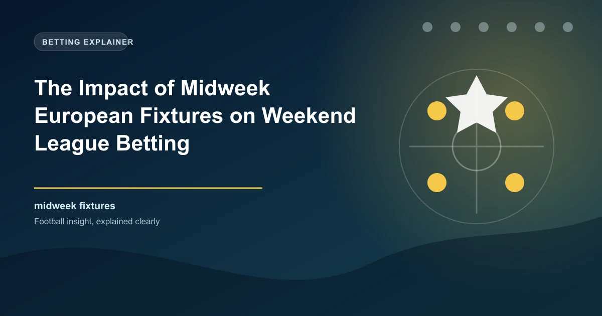

Every season, the European football calendar creates a fascinating dynamic for domestic league betting. When top clubs travel across the continent for Champions League and Europa League fixtures on Tuesday and Wednesday nights, the effects ripple through the following weekend's domestic programme. Fatigue, squad rotation, travel stress, and the psychological let-down after a big European night can all impact weekend league results. For bettors who understand these patterns, the midweek European fixture cycle creates one of the most reliable sources of value in football betting.
In this article, we will examine the statistical evidence behind the "European effect," explore which teams handle fixture congestion best, and provide practical betting strategies for weekend matches following midweek European action.
The statistics paint a clear picture: teams that play midweek European fixtures on the road tend to underperform in their subsequent domestic matches. This effect is measurable across multiple seasons and across different leagues, though its magnitude varies depending on several factors.
When a team plays a Champions League or Europa League away fixture on a Tuesday or Wednesday, their win rate in the following weekend's domestic match drops compared to their average win rate. The effect is most pronounced when:
Historical data shows that teams returning from European away trips win their next domestic match at a rate approximately 5-8% lower than their baseline win rate. While this may seem small, it represents a significant edge when applied consistently across an entire season of European fixtures.
Not all midweek European fixtures have the same impact on weekend performance. The distinction between home and away European matches is critical:
Home European matches have a minimal negative effect on weekend performance. The team sleeps in their own beds, trains at their own facilities, and faces no travel fatigue. In fact, the home European atmosphere can sometimes boost a team's confidence heading into the weekend.
Away European matches are where the real impact is felt. The combination of travel, hostile atmosphere, and the intensity of playing in a foreign stadium creates measurable fatigue that carries into the weekend. The further the travel, the greater the effect.
A Premier League team plays in Champions League on a Wednesday night away in Naples. The squad flies back to England on Thursday, has a light training session on Friday, and plays a Premier League match on Saturday at 3pm. The starting XI in Naples has covered an average of 11.2km each, with several players exceeding 12km. Now they must produce another high-intensity performance just 72 hours later. Meanwhile, their weekend opponents had a full week of rest and preparation. The physical disadvantage is significant and often shows in the second half of the weekend match.
There is a particular pattern that bettors should pay close attention to: the impact of Europa League fixtures on Sunday and Monday domestic matches. The Europa League is often seen as the less glamorous of the two European competitions, but its impact on domestic performance is arguably even more significant.
Several factors make the Europa League more taxing on teams than the Champions League:
Research across multiple seasons reveals that teams returning from Thursday night Europa League away fixtures have a notably reduced win rate in their Sunday domestic matches. This effect is particularly strong for teams that played their strongest available lineup in Europe and have limited options for rotation.
The Monday fixture slot is especially affected. When a team plays Thursday in Europe and then Monday in the league, the additional day of recovery helps somewhat, but the overall fatigue factor still reduces performance levels. Teams playing in these fixtures tend to concede more goals in the second half, suggesting that physical fatigue manifests most strongly in the latter stages of matches.
Not all teams are equally affected by the midweek European fixture cycle. Some clubs manage the demands of dual competition remarkably well, while others visibly struggle. Understanding which teams handle congestion best is essential for accurate betting analysis.
Squad depth: This is the single most important factor. Teams with two quality players for every position can rotate effectively without significant drop-off in performance. The traditional European powerhouses like Manchester City, Real Madrid, and Bayern Munich can field almost entirely different XIs in European and domestic competition without noticeable quality reduction.
Medical and sports science infrastructure: Top clubs invest heavily in recovery protocols, including cryotherapy, nutrition planning, sleep monitoring, and personalised training programmes. These resources help players recover faster between matches.
Managerial approach: Some managers are experts at managing squads through congested periods. They rotate proactively, use substitutes strategically, and adjust tactical systems to preserve energy. Others insist on playing their strongest XI in every match, which can lead to burnout.
Playing style: Teams that play a high-pressing, intense style of football expend more energy per match than teams that control possession with shorter passes. Teams that sit deep and counter-attack may be better equipped to handle fixture congestion because they cover less ground per match.
Home vs away European travel: Teams that consistently qualify for European groups with favourable travel, or those who draw home fixtures in knockout rounds, face less physical strain than teams with long-distance away trips.
Create a ranking of European teams by their squad depth and congestion resilience. When a team from the top of this ranking plays after a midweek European fixture, the fatigue factor may be minimal and should not heavily influence your betting. When a team from the bottom of the ranking plays after European travel, the fatigue factor is significant and should be weighted heavily in your analysis.
An often overlooked factor in European fixture analysis is the difference between Tuesday and Wednesday matches. Champions League group stage matches are split across these two nights, and the extra 24 hours of recovery can make a meaningful difference in weekend performance.
Teams playing on Tuesday have approximately 96 hours before a Saturday kick-off, compared to approximately 72 hours for teams playing on Wednesday. This additional day allows for an extra recovery session, more sleep, and better preparation for the weekend match. Historical data suggests that Tuesday European teams perform slightly better in their following domestic match compared to Wednesday European teams, though the difference is smaller than the home/away distinction.
When analysing a Saturday 3pm kick-off, check whether either team played on Tuesday or Wednesday. If a team played on Wednesday away in Europe and now faces a Saturday afternoon fixture, they are at a significant physical disadvantage. If the same team had played on Tuesday, the disadvantage would be reduced. This granular level of analysis can help you identify which specific weekend matches offer the most value.
Travel distance is one of the most concrete and measurable aspects of the European fixture effect. The physical toll of long-distance travel, including time zone changes, disrupted sleep patterns, and time spent sitting on planes or buses, has a documented impact on athletic performance.
European fixtures can be categorised by travel distance to assess their likely impact:
Track the specific travel details of each team heading into a European fixture. Did they charter a direct flight or take a commercial connection with a layover? Did they travel on the day before or two days before? These details matter and can help you assess the true physical impact on the squad.
Now let us turn to actionable strategies that you can implement when betting on weekend matches following midweek European action.
The most straightforward application is to look for value against teams returning from tough European away trips. If a team played Wednesday night away in a physically demanding match and now faces a well-rested opponent on Saturday, the odds may not fully account for the fatigue factor. Backing the fresh team or the draw can offer value.
Fatigued teams tend to concede more goals, particularly in the second half. This makes the over goals market attractive in matches involving teams returning from European action. Teams with tired legs are slower to close down, less disciplined in their positioning, and more prone to defensive errors. All of these factors contribute to more goals.
If you are a live bettor, the second half of weekend matches following European midweek games is where the fatigue effect is most pronounced. Teams that looked competitive in the first half may fade badly after the 60th minute as tired legs take their toll. Backing the second half over, or the trailing team to score in the second half, can be profitable strategies.
When a team rotates heavily for a weekend match following European action, it can cut both ways. A rotated squad may include fresher players who are motivated to impress, but it may also include players who lack match sharpness or chemistry with each other. Assess the specific rotation before placing your bet.
Sunday and Monday fixtures involving teams with midweek European commitments are particularly attractive for analysis. The additional recovery time helps somewhat, but the cumulative fatigue of a busy schedule still affects these teams. Opponents who have had a full week to prepare have a significant advantage.
Let us examine more closely why Sunday fixtures following Thursday Europa League nights are particularly vulnerable to upsets and unusual results. The Europa League to Sunday turnaround creates a unique set of circumstances that favour bettors who understand them.
First, the Thursday night match often involves a team's second-string players being asked to perform in a demanding away environment. These players are less accustomed to the physical demands of European football and may return more fatigued than regulars. Second, the manager must then decide whether to recall the first team for Sunday or trust the rotated squad again. Either decision carries risks.
Third, the Sunday opponent knows that their rivals have been playing in Europe while they have been resting and preparing specifically for this match. This tactical advantage, combined with the physical advantage of fresh legs, creates a genuine edge that the betting market sometimes underestimates.
The European fixture effect is not uniform across all leagues. The impact depends on the scheduling patterns, travel distances, and the number of teams involved in European competition.
Premier League: England's top flight is heavily affected because multiple teams participate in European competition and the league schedule is already the most congested of any major European league. Saturday lunchtime kick-offs following Wednesday European away trips are the most affected fixtures.
Bundesliga: Germany's league benefits from a winter break and a slightly less congested schedule, but the travel to Eastern European and Turkish venues for Europa League matches still takes a toll on Bundesliga teams.
Serie A: Italian teams sometimes benefit from Sunday and Monday fixture scheduling that gives extra recovery time after European midweek matches. However, the physical intensity of Italian football means that fatigue still manifests.
La Liga: Spanish teams face long travel to many Europa League venues, and the technical demands of La Liga require sharp mental performance that can be diminished by fatigue.
Ligue 1: French teams involved in European competition face the same challenges as their counterparts, though the fewer number of Ligue 1 teams in European competition limits the sample size.
The European fixture effect is a statistical tendency, not a guarantee. Individual matches are influenced by many factors beyond fixture scheduling. Always consider the full context of a match, including team form, head-to-head records, tactical matchups, and player availability, alongside the European fatigue factor.
Beyond the physical effects of fatigue and travel, there is a significant psychological dimension to the European fixture cycle that affects weekend performance. The mental energy expended in a high-stakes European match can leave players drained and less focused for what they perceive as a less important domestic fixture.
This is particularly true for teams that are comfortably mid-table in their domestic league and prioritise European competition. For these teams, a Champions League knockout tie is the highlight of their season, and the domestic league fixture the following weekend may feel like a letdown. This psychological shift can manifest as reduced intensity, poorer decision-making, and a lack of urgency on the pitch.
Conversely, teams that are competing for domestic honours may approach European matches differently, saving energy for the more important league fixture. These teams often rotate heavily in Europe and field their strongest XI in the league, which can mitigate the fatigue effect.
For serious bettors, building a simple European fixture calendar model can be incredibly valuable. The model should track:
By mapping out these factors for each European fixture week, you can proactively identify the weekend matches where the European effect is most likely to influence the result. This systematic approach removes emotion from the equation and allows you to focus on the matches where genuine value exists.
Midweek European fixtures create one of the most reliable and exploitable patterns in football betting. The fatigue, travel, rotation, and psychological effects of midweek European action measurably reduce teams' performance in subsequent domestic matches. By systematically analyzing which teams are most affected, tracking travel distances, and identifying the weekend fixtures where the European effect is most pronounced, you can find consistent value that the majority of the betting market overlooks. Start incorporating European fixture analysis into your betting routine and you will gain a meaningful edge over the competition.
Our predictions factor in midweek European commitments and squad rotation to find value in weekend league matches.
View 1X2 Predictions Win
Win